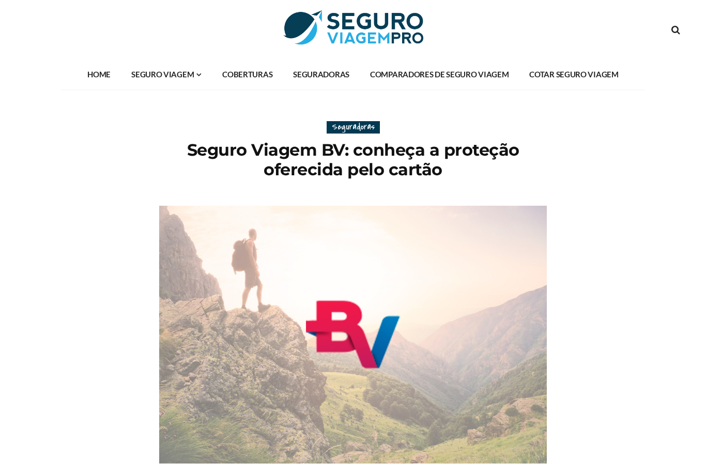

Sistema de Investigação de Marca e Identidade Online
https://seguroviagempro.com.br/seguro-viagem-bv/
Prioridade: HIGH · Cenário: B_AMBIGUOUS_COMMUNICATION · Revisão humana: PENDING
Página enquadrada na triagem de descarte imediato (Fora de Escopo). Trata-se de um artigo em blog/portal de dicas e viagens (Seguro Viagem Pro) avaliando os benefícios de assistência viagem do cartão Banco BV. Não se trata de estabelecimento comercial, loja de veículos ou correspondente bancário intermediando crédito à luz da Resolução CMN nº 4.935/2021. [Revisor: DOWNGRADE] A página corresponde a um artigo em blog de dicas/comparativos de seguros e viagens ('Seguro Viagem Pro' de propriedade da Wcontent). O conteúdo avalia editorialmente os benefícios de seguro viagem atrelados a cartões Banco BV. Seguindo as diretrizes de triagem, portais jornalísticos, blogs informativos e comparadores editoriais que não operam como correspondentes bancários ou parceiros comerciais de crédito/veículos/solar devem receber downgrade para NO_INDICATION com prioridade LOW.
Regiões dos screenshots comparadas com a referência da logo descontinuada (B vermelho sobre V azul), sem uso de IA.
| Screenshot | Posição (x, y) | Tamanho | Similaridade | Imagem |
|---|---|---|---|---|
| E-SHOT-VIEWPORT | 592, 583 | 181×132 px | 0.95 | https://seguroviagempro.com.br/wp-content/uploads/2020/03/seguro-viagem-bv.jpg |

| Ref | Tipo | Local | Conteúdo |
|---|---|---|---|
| E-VIS-LEGACY-001 | visual | viewport (acima da dobra) | Comparação de imagem (determinística, sem IA): logotipo ANTIGO de Banco BV (B vermelho sobre V azul) em E-SHOT-VIEWPORT, posição x=592 y=583, 181x132px, similaridade 0.95; imagem: https://seguroviagempro.com.br/wp-content/uploads/2020/03/seguro-viagem-bv.jpg |
| E-URL | domain | url | URL final: https://seguroviagempro.com.br/seguro-viagem-bv/ (domínio: seguroviagempro.com.br) |
| E-DISC-001 | text | search_index | Índice de busca (lens): Seguro Viagem BV: conheça a proteção oferecida pelo cartão — Imagem visualmente semelhante ao logotipo antigo (fonte: Seguro Viagem Pro) |
| E-SHOT-VIEWPORT | screenshot | viewport | evidence/Cedd6e6f70a/attempt-2/viewport.png (sha256 809ad32394f4c8e3…) |
| E-SHOT-FULL | screenshot | page | evidence/Cedd6e6f70a/attempt-2/fullpage.png (sha256 6c0d854ab831594b…) |
| E-TITLE | title | head | Seguro Viagem BV: conheça a proteção oferecida pelo cartão |
| E-META-1 | meta | head | description: O seguro viagem BV é para todos os clientes desta empresa financeira? Tire a dúvida e descubra qual a cobertura, as vantagens e desvantagens. |
| E-META-2 | meta | head | og:site_name: Seguro Viagem Pro |
| E-META-3 | meta | head | og:title: Seguro Viagem BV: conheça a proteção oferecida pelo cartão |
| E-META-4 | meta | head | og:description: O seguro viagem BV é para todos os clientes desta empresa financeira? Tire a dúvida e descubra qual a cobertura, as vantagens e desvantagens. |
| E-META-5 | meta | head | author: Luciana Andrade |
| E-CANONICAL | meta | head | https://seguroviagempro.com.br/seguro-viagem-bv/ |
| E-HEAD-1 | heading | page | Seguro Viagem BV: conheça a proteção oferecida pelo cartão |
| E-HEAD-2 | heading | page | Como funciona o Seguro Viagem BV |
| E-HEAD-3 | heading | page | Quem pode solicitar o Seguro Viagem BV? |
| E-HEAD-4 | heading | page | Como solicitar? |
| E-HEAD-5 | heading | page | Benefícios do Seguro Viagem BV |
| E-HEAD-6 | heading | page | Avaliação do Seguro Viagem BV |
| E-HEAD-7 | heading | page | Vale a pena optar pelo Seguro Viagem BV? |
| E-HEAD-8 | heading | page | Vantagens |
| E-HEAD-9 | heading | page | Desvantagens |
| E-HEAD-10 | heading | page | O que considerar nesta escolha? |
| E-HEAD-11 | heading | page | Como encontrar outros planos? |
| E-HEAD-12 | heading | page | Comparativo do Seguro Viagem BV e planos semelhantes |
| E-HEAD-13 | heading | page | Recomendação Seguro Viagem Pro |
| E-HEAD-14 | heading | page | Desconto no seguro viagem |
| E-HEAD-15 | heading | page | Luciana Andrade |
| E-HDR | text | header | Seguro Viagem BV: conheça a proteção oferecida pelo cartão | Sabemi Seguro Viagem: descubra se vale a pena contratar | Assist Card Seguro Viagem vale a pena? Veja a nossa avaliação! | Affinity Seguro Viagem vale a pena? Veja a nossa avaliação | Affinity ou My Travel Assist: qual seguro viagem é melhor? | Nubank Seguro Viagem: saiba como funciona a proteção | Seguro Viagem American Express: vantagens e desvantagens |
| E-FOLD | text | viewport (acima da dobra) | Home Seguro Viagem Coberturas Seguradoras Comparadores de Seguro Viagem Cotar Seguro Viagem Seguradoras Seguro Viagem BV: conheça a proteção oferecida pelo cartão |
| E-FTR | text | footer | Pesquisar Artigos em destaque Seguro Viagem Europa Seguro Viagem Estados Unidos Seguro Viagem Internacional Seguro Viagem Nacional Seguro de Viagem Links Úteis Política de Privacidade Termos e Condições Quem Somos Colabore conosco Contato Sites parceiros Euro Dicas Euro Dicas Turismo Juramentei Informações legais Seguro Viagem Pro é um site/marca registrada e de propriedade da empresa Wcontent com sede em Portugal e no Brasil. Para informações legais, entrar em contato diretamente com a Wcontent. Conteúdo autoral, vigiado e protegido pelo DMCA. Proibido copiar e/ou reproduzir (todo ou em partes) sem autorização prévia. Seguro Viagem Pro © Copyright 2023. Todos os direitos reservados |
| E-NAV | nav | header | HOME <https://seguroviagempro.com.br/> | SEGURO VIAGEM <https://seguroviagempro.com.br/seguro-viagem/> | COBERTURAS <https://seguroviagempro.com.br/coberturas/> | SEGURADORAS <https://seguroviagempro.com.br/seguradoras/> | COMPARADORES DE SEGURO VIAGEM <https://seguroviagempro.com.br/comparadores/> | COTAR SEGURO VIAGEM <https://www.segurospromo.com.br/?utm_medium=afiliado&pcrid=7808&utm_source=site-blog&pcrtt=menu> | Como funciona o Seguro Viagem BV <https://seguroviagempro.com.br/seguro-viagem-bv/#como-funciona-o-seguro-viagem-bv> | Benefícios do Seguro Viagem BV <https://seguroviagempro.com.br/seguro-viagem-bv/#beneficios-do-seguro-viagem-bv> | Avaliação do Seguro Viagem BV <https://seguroviagempro.com.br/seguro-viagem-bv/#avaliacao-do-seguro-viagem-bv> | Vale a pena optar pelo Seguro Viagem BV? <https://seguroviagempro.com.br/seguro-viagem-bv/#vale-a-pena-optar-pelo-seguro-viagem-bv> | Como encontrar outros planos? <https://seguroviagempro.com.br/seguro-viagem-bv/#como-encontrar-outros-planos> | Comparativo do Seguro Viagem BV e planos semelhantes <https://seguroviagempro.com.br/seguro-viagem-bv/#comparativo-do-seguro-viagem-bv-e-planos-semelhantes> | Recomendação Seguro Viagem Pro <https://seguroviagempro.com.br/seguro-viagem-bv/#recomendacao-seguro-viagem-pro> | Sabemi Seguro Viagem: descubra se vale a pena contratar <https://seguroviagempro.com.br/sabemi-seguro-viagem/> | Assist Card Seguro Viagem vale a pena? Veja a nossa avaliação! <https://seguroviagempro.com.br/ass |
| E-IMG-1 | image | page (acima da dobra) | imagem alt='seguro viagem BV' src=https://seguroviagempro.com.br/wp-content/uploads/2020/03/seguro-viagem-bv.jpg (750x500, acima da dobra) |
| E-IMG-2 | image | page | imagem alt='seguro de viagem cartão bv' src=https://seguroviagempro.com.br/wp-content/uploads/2020/01/seguro-de-viagem-cartao-bv.jpg (750x454, abaixo da dobra) |
| E-OFFICIAL-LINKS | link | page | página do cartão <https://www.bv.com.br/cartao/beneficios-elo> |
| E-TXT-001 | text | page | Seguro Viagem BV: conheça a proteção oferecida pelo cartão |
| E-TXT-002 | text | page | A BV é a marca de varejo do Banco Votorantim, que já tem mais de 20 anos no mercado oferecendo soluções financeiras, como créditos e financiamentos. Entre seus benefícios, um destaque vai para o Seguro Viagem BV, que pode ser uma boa alternativa para quem possui o cartão. |
| E-TXT-003 | text | page | Como funciona o Seguro Viagem BV |
| E-TXT-004 | text | page | Benefícios do Seguro Viagem BV |
| E-TXT-005 | text | page | Avaliação do Seguro Viagem BV |
| E-TXT-006 | text | page | Vale a pena optar pelo Seguro Viagem BV? |
| E-TXT-007 | text | page | Comparativo do Seguro Viagem BV e planos semelhantes |
| E-TXT-008 | text | page | Como funciona o Seguro Viagem BV |
| E-TXT-009 | text | page | No entanto, vale lembrar que a BV não responde pela prestação dos serviços, que é de inteira responsabilidade da Elo, a bandeira do cartão. Por sua vez, a bandeira não é a provedora dos planos, que são garantidos pela AIG Seguros. Estas informações constam no Guia de Benefícios que traz uma visão geral do seguro. |
| E-TXT-010 | text | page | Portanto, o Seguro Viagem BV é garantido pela parceria entre a Elo, que paga os eventuais reembolsos, e a AIG, que presta de fato os serviços. |
| E-TXT-011 | text | page | Quem pode solicitar o Seguro Viagem BV? |
| E-TXT-012 | text | page | A proteção é um benefício gratuito para os clientes que possuem o Cartão BV da bandeira Elo, na categoria Grafite. |
| E-TXT-013 | text | page | Na prática, o seguro se estende ao titular e aos demais passageiros beneficiários que tiverem a passagem aérea, marítima ou terrestre pagas com o cartão BV elegível. |
| E-TXT-014 | text | page | Para ter direito ao Seguro Viagem BV, é preciso ter comprado a passagem com o Elo Grafite emitido pela BV, como já adiantamos acima. E se por acaso tiver resgatado a passagem aérea com milhas, é necessário ter pago a taxa de embarque com este cartão. |
| E-TXT-015 | text | page | Atendida esta condição, basta emitir o bilhete do seguro no site da Elo para cada passageiro, para isso, deve-se selecionar o cartão e na sequência será redirecionado para a página na qual deve inserir o CPF e a senha, correspondente ao cadastro no site Elo. |
| E-TXT-016 | text | page | A recomendação da BV é realizar esta ativação do bilhete do seguro viagem com pelo menos um dia de antecedência da data de início da viagem. Na nossa opinião, o ideal é fazer esta emissão 72 horas antes, para ter tempo de contornar qualquer problema. |
| E-TXT-017 | text | page | Benefícios do Seguro Viagem BV |
| E-TXT-018 | text | page | O Seguro Viagem cartão BV oferecido pela ELO oferece itens como estes a seguir. Apresentamos os valores de reembolso para planos nacionais/internacionais. Confira: |
| E-TXT-019 | text | page | Avaliação do Seguro Viagem BV |
| E-TXT-020 | text | page | Além da cobertura oferecida, também é importante analisar o Seguro Viagem BV do ponto de vista do relacionamento com os clientes. Por isso buscamos no Reclame Aqui a avaliação da empresa. |
| E-TXT-021 | text | page | A BV Financeira tem avaliação BOA, com nota 7,2 atribuída pelos clientes no período de agosto de 2019 a janeiro de 2020. Neste período, respondeu 96,6% das 2.220 queixas em um tempo médio de 15 dias, com índice alto de solução, de 76,3%. Não encontramos reclamações do seguro viagem propriamente dito, sendo a maioria sobre problemas com atendimento, cobrança indevida e dificuldade de realizar |
| E-TXT-022 | text | page | Outra boa referência é a reputação da AIG Seguros no Reclame Aqui. A empresa que garante o seguro viagem do cartão BV recebeu uma nota ótima (8,4) no mesmo período de avaliação da BV. Além disso, foram somente 104 reclamações, com todas respondidas em apenas 18 horas em média. O índice de solução (83,9%) e a porcentagem de clientes que voltariam a fazer negócio (76,8%) são altos e indicam uma bom |
| E-TXT-023 | text | page | Confira também o seguro viagem do banco Banrisul e o Vital Card seguro viagem descubra se valem a pena. |
| E-TXT-024 | text | page | Vale a pena optar pelo Seguro Viagem BV? |
| E-TXT-025 | text | page | O cliente com o cartão Elo Grafite tem direito ao Seguro Viagem BV de graça; |
| E-TXT-026 | text | page | A seguradora AIG, que garante o seguro, e a própria BV Financeira, são bem avaliadas no Reclame Aqui; |
| E-TXT-027 | text | page | Só é possível utilizar o seguro viagem do cartão BV se tiver comprado a passagem aérea com o cartão ELO Grafite emitido pela BV; |
| E-TXT-028 | text | page | Ainda que o seguro viagem do cartão BV tenha algumas desvantagens, ele pode ser suficiente para a maioria dos viajantes que não exigem cuidados especiais com a saúde. |
| E-TXT-029 | text | page | Comparativo do Seguro Viagem BV e planos semelhantes |
| E-TXT-030 | text | page | Para concluir a nossa análise, simulamos outros seguros viagem ao lado do BV, considerando 10 dias de estadia, no período de 1 a 10 de maio de 2020, na Europa. Veja o que encontramos: |
| E-TXT-031 | text | page | Em linhas gerais, o Seguro Viagem BV é uma boa alternativa e vale a pena se você já for cliente e possuir o Elo Grafite. Mas se esse não é seu caso ou se você deseja uma cobertura mais alta – o que recomendamos, a sugestão é contratar outro seguro. Considere esta possibilidade principalmente para viajantes idosos, gestantes, com doenças preexistentes e praticantes de esportes, que podem exigir |
| E-TXT-032 | text | page | Utilize o nosso cupom SVP5, que dá direito a 5% de desconto, para quem está no Seguros Promo. Nestes dois sites, se você optar pelo pagamento com boleto bancário, você garante mais 5%, totalizando uma redução de 10% no valor final. Depois dessa dica, só nos resta desejar uma ótima viagem! |
| E-TXT-033 | text | page | Sites parceiros |
| Dimensão | Sinal | Achado | Refs |
|---|---|---|---|
| DECLARED_COMMERCIAL_IDENTITY | NEUTRAL | O site identifica-se como Seguro Viagem Pro, portal editorial/informativo pertencente à empresa Wcontent. | E-FTR E-META-2 |
| INSTITUTIONAL_LANGUAGE | NEUTRAL | O texto adota tom jornalístico e informativo de avaliação/comparativo de benefícios de seguro viagem do cartão BV, sem ofertar crédito ou se apresentar como correspondente bancário. | E-TITLE E-TXT-001 E-TXT-002 E-TXT-009 |
| LOGO_USAGE | NEUTRAL | A imagem de capa do artigo utiliza o logotipo antigo da BV (B vermelho sobre V azul) em contexto puramente ilustrativo para análise de produto/serviço. | E-VIS-LEGACY-001 E-IMG-1 E-SHOT-VIEWPORT |
Página enquadrada na triagem de descarte imediato (Fora de Escopo). Trata-se de um artigo em blog/portal de dicas e viagens (Seguro Viagem Pro) avaliando os benefícios de assistência viagem do cartão Banco BV. Não se trata de estabelecimento comercial, loja de veículos ou correspondente bancário intermediando crédito à luz da Resolução CMN nº 4.935/2021.
Nenhum CNPJ ou razão social identificáveis no conteúdo coletado.
| Tipo | Valor | Ref | Contexto |
|---|---|---|---|
| domain | seguroviagempro.com.br | E-URL | |
| trade_name | Seguro Viagem Pro | E-META-2 | |
| partnership_declaration | parceria | E-TXT-010 | Portanto, o Seguro Viagem BV é garantido pela parceria entre a Elo, que paga os eventuais reembolsos, e a AIG, que presta de fato os serviços. |
Mapeamento indicativo para apoio à auditoria. Não constitui conclusão regulatória; a decisão definitiva pertence à auditoria.
Fonte: NORMATIVE
Art. 14. O contrato de correspondente deve estabelecer: [...] II - vedação à utilização, pelo contratado, de logomarca ou de outros atributos que sejam similares aos adotados pela instituição contratante em suas agências, postos de atendimento, sítio eletrônico na internet, aplicativo ou outras plataformas de comunicação em rede;
Hipótese: Uso de logomarca, uso excessivo/desproporcional ou de atributos similares aos adotados pela contratante em seus canais. A norma disciplina correspondentes contratados; o responsável não foi identificado como correspondente.
Evidência observada: E-IMG-1 E-IMG-2 E-VIS-LEGACY-001
Informação faltante:
Fonte: NORMATIVE
Art. 14. O contrato de correspondente deve estabelecer: [...] III - divulgação ao público, pelo contratado, de sua condição de prestador de serviços à instituição contratante, identificada pelo nome com que é conhecida no mercado, com descrição dos produtos e serviços oferecidos e canais de contato da instituição contratante, inclusive de sua ouvidoria, em local visível, em destaque e em formato legível, por meio de: a) sítio eletrônico do correspondente na internet, acessível na página inicial; b) aplicativo e outras plataformas de comunicação em rede do correspondente; [...]
Hipótese: Divulgação ao público da condição de prestador de serviços/parceria ausente, insuficiente, ambígua ou sem destaque. A norma disciplina correspondentes contratados; o responsável não foi identificado como correspondente.
Evidência observada: E-FOLD E-FTR E-HDR E-NAV E-TITLE
Informação faltante:
Fonte: NORMATIVE
Art. 3º O correspondente atua por conta e sob as diretrizes da instituição contratante, que assume inteira responsabilidade pelo atendimento prestado aos clientes e usuários por meio do contratado.
Evidência observada: —
Se o responsável não for correspondente contratado, os indícios podem caracterizar uso indevido de marca ou fraude, fora do escopo da Res. 4.935: avaliar encaminhamento às áreas jurídica/segurança.
Limitações: requisitos contratuais/internos não fornecidos: mapeamento limitado ao texto normativo
Decisão: DOWNGRADE → NO_INDICATION / LOW
A página corresponde a um artigo em blog de dicas/comparativos de seguros e viagens ('Seguro Viagem Pro' de propriedade da Wcontent). O conteúdo avalia editorialmente os benefícios de seguro viagem atrelados a cartões Banco BV. Seguindo as diretrizes de triagem, portais jornalísticos, blogs informativos e comparadores editoriais que não operam como correspondentes bancários ou parceiros comerciais de crédito/veículos/solar devem receber downgrade para NO_INDICATION com prioridade LOW.
| Tema | Severidade | Questionamento | Refs |
|---|---|---|---|
| Enquadramento editorial / Blog de turismo e seguros | HIGH | O site em questão (Seguro Viagem Pro) é um portal de conteúdo editorial e comparador informativo de viagens e seguros, avaliando os benefícios do cartão Banco BV. Não se trata de COBAN, financeira, revenda de veículos ou integrador solar. | E-TITLE E-META-2 E-HEAD-1 E-FTR E-TXT-002 |
| domain_attribution | MEDIUM | Responsável pela página não identificado; a conclusão sobre a marca não pode ser atribuída a um estabelecimento específico. | E-URL |
| Fonte | Consulta / hipótese | URL original | Título / trecho |
|---|---|---|---|
| lens | https://logospng.org/wp-content/uploads/bv-financeira.png H12-legacy-logo:lens | https://seguroviagempro.com.br/seguro-viagem-bv/ | Seguro Viagem BV: conheça a proteção oferecida pelo cartão Imagem visualmente semelhante ao logotipo antigo (fonte: Seguro Viagem Pro) |
Original: https://seguroviagempro.com.br/seguro-viagem-bv/
Final: https://seguroviagempro.com.br/seguro-viagem-bv/
| Artefato | Caminho | SHA-256 | Bytes |
|---|---|---|---|
| screenshot_viewport | evidence/Cedd6e6f70a/attempt-2/viewport.png | 809ad32394f4c8e3420753e21df91b535b0dc6ecc32ae8d80c8e65209aa31ccf | 520248 |
| screenshot_full | evidence/Cedd6e6f70a/attempt-2/fullpage.png | 6c0d854ab831594b9a8f1eb356348e2a3de4d93c6ebc4aae6c1ce6d51d749e27 | 2692767 |
| html | evidence/Cedd6e6f70a/attempt-2/page.html.txt | 8d26833f45a6f6624c6c0af1a3954063c761253d70cbdf4094fe642075945754 | 230988 |
| text | evidence/Cedd6e6f70a/attempt-2/text.txt | 83e7c4830604d8793300fd3c336e1d319304cfbfd3604e81dc44620b9767fade | 12642 |
| page_data | evidence/Cedd6e6f70a/attempt-2/page.json | 5d5a569f518b7826a1f52c091dfa94b0057ea6b85578255e328a09d54540b1e5 | 35963 |
| Quando | De | Para | Nota |
|---|---|---|---|
| 2026-11-25T20:48:31+00:00 | DISCOVERED | QUEUED | prioritised (score 2.0) |
| 2026-11-25T20:55:18+00:00 | QUEUED | COLLECTING | |
| 2026-11-25T20:55:26+00:00 | COLLECTING | COLLECTED | |
| 2026-11-25T20:55:26+00:00 | COLLECTED | ANALYZING | |
| 2026-11-25T20:55:27+00:00 | ANALYZING | COLLECTED | prepare error, retry 1: UnboundLocalError |
| 2026-11-25T20:55:30+00:00 | COLLECTED | ANALYZING | |
| 2026-11-25T20:55:32+00:00 | ANALYZING | COLLECTED | prepare error, retry 2: UnboundLocalError |
| 2026-11-25T20:55:37+00:00 | COLLECTED | ANALYZING | |
| 2026-11-25T20:55:39+00:00 | ANALYZING | FAILED | prepare failed: UnboundLocalError: cannot access local variable 'is_disc' where it is not associated with a value |
| 2026-11-25T20:58:34+00:00 | FAILED | QUEUED | retry requested by operator |
| 2026-11-25T21:02:08+00:00 | QUEUED | COLLECTING | |
| 2026-11-25T21:02:15+00:00 | COLLECTING | COLLECTED | |
| 2026-11-25T21:02:15+00:00 | COLLECTED | ANALYZING | |
| 2026-11-25T21:02:28+00:00 | ANALYZING | REVIEWING | |
| 2026-11-25T21:02:35+00:00 | REVIEWING | COMPLETED |